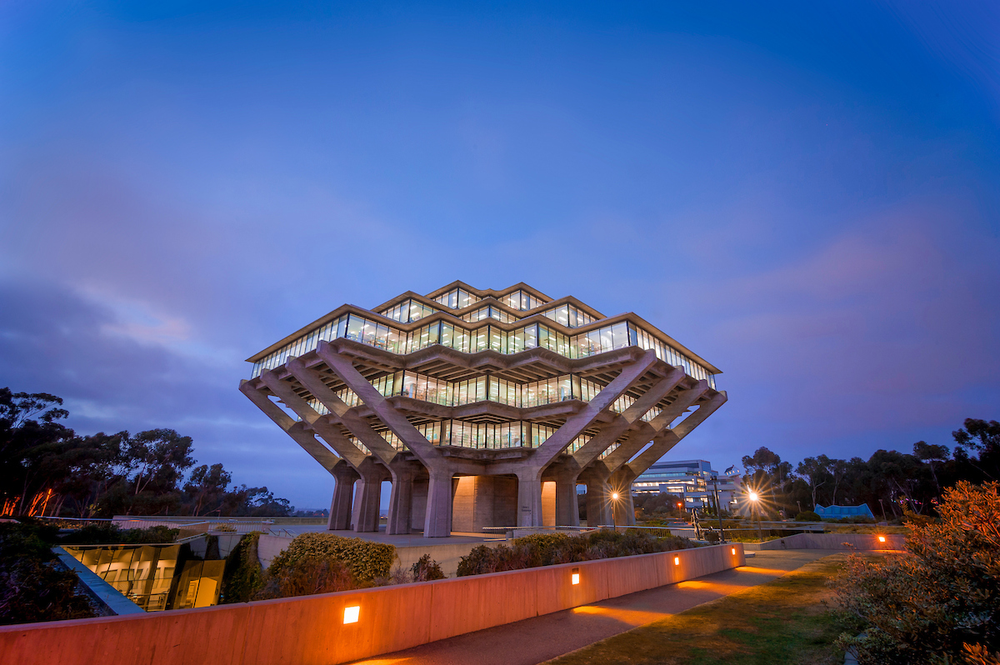
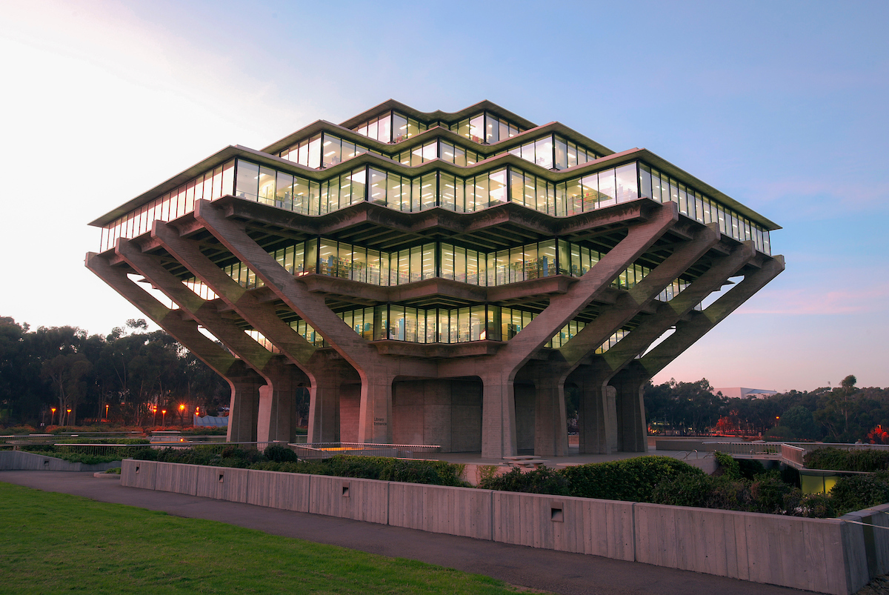

Components
Every component meets the 44 px touch target minimum. Tactile button press is implemented via translateY + box-shadow. No AI design tells — full borders, no left-only accent stripes.
Buttons
Four variants, three sizes. The press feel comes from a bottom-edge shadow that collapses on :active with a 2px downward translate. Disabled state uses opacity — never a grey color swap.
Variants
Sizes
States
Icon buttons
Button with icon + label
<button class="btn btn--primary">Primary</button>
<button class="btn btn--secondary">Secondary</button>
<button class="btn btn--ghost">Ghost</button>
<button class="btn btn--danger">Danger</button>
<!-- Sizes -->
<button class="btn btn--primary btn--sm">Small</button>
<button class="btn btn--primary btn--lg">Large</button>
<!-- Icon only — always include aria-label -->
<button class="btn btn--ghost btn--icon" aria-label="Edit">
<svg ...></svg>
</button>Badges & tags
Badges
Tags
Alerts
All alerts use icon + color + text. Never color alone. Use role="alert" for urgent messages; role="status" for informational notices.
role="status" for non-urgent notices.Panels
Featured panels use an accent-color shadow ring rather than a stripe. The ring is distinctive without repeating the overused stripe pattern. Pair with a .panel__icon Lucide icon to reinforce the context visually.
Standard panel
Raised panel
ElevatedFeatured — primary
Primary.panel__icon reinforces context.Featured — success
Featured — danger
Tables
Wrap in .table-wrap for overflow and border. Use .table--striped for zebra rows on dense data.
| Component | Status | WCAG level | Touch target | Version |
|---|---|---|---|---|
| Button | Stable | AAA | 44–52 px | 1.0 |
| Form input | Stable | AAA | 44 px | 1.0 |
| Alert | Stable | AAA | — | 1.0 |
| Dialog | Beta | AA | 44 px | 0.9 |
| Toast | Beta | AA | 36 px | 0.9 |
Tabs
Use role="tablist", role="tab", role="tabpanel", and aria-selected. Keyboard: arrow keys move between tabs, Enter/Space activates.
The Overview tab is active. Tabs use an underline indicator on the active tab — not a filled background.
Usage guidelines go here.
Code examples go here.
Progress bars
Always include a numeric or text label — never rely on bar width alone to convey value.
Images
All images must have meaningful alt text. Decorative images use alt="". Use <figure> + <figcaption> when the image requires a visible caption.
Responsive image
<img
src="photo.jpg"
alt="Descriptive alt text — who, what, where"
class="img-responsive"
width="800"
height="400"
loading="lazy"
>Figure with caption

<figcaption> — page content, not an alt text substitute.
Image card

Geisel Library
Image card with 16:9 image, title, and description. Border radius matches the card corners.
<!-- Figure + caption -->
<figure class="img-figure">
<img src="photo.jpg" alt="..." width="600" height="300" loading="lazy">
<figcaption>Caption text here</figcaption>
</figure>
<!-- Image card -->
<div class="img-card">
<img class="img-card__image" src="photo.jpg" alt="...">
<div class="img-card__body">
<h3 class="img-card__title">Title</h3>
<p class="img-card__desc">Description</p>
</div>
</div>Dialogs
Use the native <dialog> element. Focus must be trapped inside the dialog while open. Pressing Escape closes it. The first focusable element inside receives focus on open.
Code display
Inline code
Use --color-accent for interactive elements and --color-focus for the focus ring. The Tab key moves focus; Enter activates buttons.
Code block with copy button
.btn--primary {
background-color: var(--color-accent);
border-color: var(--color-accent);
color: var(--color-text-on-accent);
box-shadow: var(--shadow-btn-accent);
}
.btn--primary:active:not(:disabled) {
transform: translateY(2px);
box-shadow: var(--shadow-btn-active);
}Diff display
Terminal
Icons
DX Tools uses Lucide as its icon toolkit — MIT licensed, 1,400+ icons, actively maintained. Load via CDN and activate with lucide.createIcons(). Icons are decorative by default; add aria-label when the icon is the only label.
Common system icons
Icon sizes with buttons
<!-- CDN (add before theme.js) -->
<script src="../js/lucide.min.js"></script>
<!-- Usage: data-lucide attribute, initialized by theme.js -->
<i data-lucide="check-circle" width="18" height="18" aria-hidden="true"></i>
<!-- Icon-only button: label on the button, icon is decorative -->
<button class="btn btn--icon btn--ghost" aria-label="Delete item">
<i data-lucide="trash-2" width="18" height="18" aria-hidden="true"></i>
</button>
<!-- Icon + label button -->
<button class="btn btn--primary">
<i data-lucide="upload" width="18" height="18" aria-hidden="true"></i>
Upload file
</button>Drag & drop
CSS classes for drag-and-drop and reorder interfaces. Works with the HTML5 Drag and Drop API, SortableJS, or any drag library. All states use shape + color cues — never color alone.
Every drag interaction is fully keyboard-accessible: Tab to the handle, Space or Enter to grab, ↑ ↓ to reorder, Escape to cancel.
Sortable list
The .drag-handle uses the grip-vertical Lucide icon. Implement it as a <button> for keyboard access — the demo below includes a full keyboard handler and ARIA live announcements.
To reorder with a keyboard: Tab to a grip handle, press Space or Enter to grab the item, use Arrow Up or Arrow Down to move it, then press Space or Enter again to drop, or Escape to cancel.
- Information Architecture Map Active
- Staff Directory Tool Draft
- Analytics Dashboard Draft
- Campus Map Editor Published
Drop zones
Default state
Active — item hovering
Forbidden — cannot drop here
Dragging item — ghost
Keyboard interaction
| Key | Action |
|---|---|
| Tab | Move focus to the next drag handle |
| Space / Enter | Grab the focused item (toggle). Press again to drop in place. |
| ↑ Arrow Up | While grabbed — move item one position up |
| ↓ Arrow Down | While grabbed — move item one position down |
| Escape | Cancel drag; item returns to its original position |
<!-- sr-only keyboard instructions (referenced by handles) -->
<p id="sort-kb-instructions" class="sort-announcer">
Tab to a grip handle, Space or Enter to grab, Arrow Up/Down to move,
Space or Enter to drop, Escape to cancel.
</p>
<!-- sr-only live region (screen reader movement announcements) -->
<div class="sort-announcer" aria-live="polite" aria-atomic="true" id="sort-announcer"></div>
<ul class="sort-list" role="list" aria-label="Reorderable list">
<li class="sort-list__item draggable" draggable="true">
<button class="drag-handle" type="button"
aria-label="Reorder: Item name"
aria-describedby="sort-kb-instructions"
aria-pressed="false">
<i data-lucide="grip-vertical" width="16" height="16" aria-hidden="true"></i>
</button>
Item content
</li>
</ul>
<!-- Drop zone -->
<div class="drop-zone" aria-label="Drop files here" role="region">
<i data-lucide="upload-cloud" width="20" height="20" aria-hidden="true"></i>
Drop files here
</div>// Keyboard reorder handler — attach to your sort list
function initKeyboardSort(list, announcerId) {
var announcer = document.getElementById(announcerId);
var originalOrder = null; // saved on grab for Escape
function announce(msg) {
if (!announcer) return;
announcer.textContent = '';
setTimeout(function() { announcer.textContent = msg; }, 50);
}
function getPosition(item) {
return Array.from(list.querySelectorAll('.sort-list__item')).indexOf(item) + 1;
}
function countItems() {
return list.querySelectorAll('.sort-list__item').length;
}
list.querySelectorAll('.drag-handle').forEach(function(handle) {
handle.addEventListener('keydown', function(e) {
var item = handle.closest('.sort-list__item');
var grabbed = item.classList.contains('is-grabbed');
if (e.key === ' ' || e.key === 'Enter') {
e.preventDefault();
if (!grabbed) {
// Grab — save snapshot for Escape
originalOrder = Array.from(list.querySelectorAll('.sort-list__item'));
item.classList.add('is-grabbed');
handle.setAttribute('aria-pressed', 'true');
announce('Grabbed ' + handle.getAttribute('aria-label').replace('Reorder: ', '')
+ '. Position ' + getPosition(item) + ' of ' + countItems()
+ '. Use Arrow Up or Down to move, Escape to cancel.');
} else {
// Drop
item.classList.remove('is-grabbed');
handle.setAttribute('aria-pressed', 'false');
originalOrder = null;
announce('Dropped at position ' + getPosition(item) + ' of ' + countItems() + '.');
}
} else if (e.key === 'ArrowUp' && grabbed) {
e.preventDefault();
var prev = item.previousElementSibling;
if (prev && prev.classList.contains('sort-list__item')) {
list.insertBefore(item, prev);
handle.focus();
announce('Moved up. Now position ' + getPosition(item) + ' of ' + countItems() + '.');
} else {
announce('Already at the top.');
}
} else if (e.key === 'ArrowDown' && grabbed) {
e.preventDefault();
var next = item.nextElementSibling;
if (next && next.classList.contains('sort-list__item')) {
list.insertBefore(item, next.nextSibling);
handle.focus();
announce('Moved down. Now position ' + getPosition(item) + ' of ' + countItems() + '.');
} else {
announce('Already at the bottom.');
}
} else if (e.key === 'Escape' && grabbed) {
e.preventDefault();
// Restore original order
if (originalOrder) {
originalOrder.forEach(function(el) { list.appendChild(el); });
originalOrder = null;
}
item.classList.remove('is-grabbed');
handle.setAttribute('aria-pressed', 'false');
handle.focus();
announce('Cancelled. Order restored.');
}
});
});
}
// Usage
initKeyboardSort(document.getElementById('sort-demo'), 'sort-announcer');Accessibility notes
- Use a
<button>for the drag handle — not a<span>— so it is natively focusable and keyboard-operable. - Set
aria-pressed="false"initially; toggle to"true"when grabbed. This tells screen readers the handle is a toggle button. aria-describedbyon each handle points to the.sort-announcerelement containing keyboard instructions. Screen readers read this on focus.- The
aria-live="polite"region announces each move ("Moved up. Now position 2 of 4.") without interrupting the user mid-speech. - Escape always restores the original order — users can explore reordering without committing to changes.
- Mouse drag still works alongside keyboard — the two modes are independent.
draggable="true"on the<li>handles mouse; the<button>handles keyboard.
Preview container
The preview container wraps brand-faithful mockups in a browser-chrome frame — the same pattern used throughout this documentation. It visually separates tool UI from the content being previewed, making it clear what is interface and what is content.
The outer frame (.preview-container + .preview-toolbar) uses frame tokens. The inner area (.dx-preview) applies preview.css tokens — brand-faithful UC San Diego palette with Roboto, regardless of the outer frame's color mode.
Basic preview
UC San Diego Brand Content
This area renders with brand-faithful UC San Diego styles — white background, Navy headings, Roboto font — regardless of whether the surrounding frame is in dark or light mode.
Learn more about the design systemStage variant — dark background
Use .preview-container--stage for content that is shown on a dark or Navy background, such as header or navigation mockups.
Responsive viewport simulation
Add data-viewport="mobile" or data-viewport="tablet" to the container to constrain the preview width, simulating different device breakpoints.
Mobile layout
Content is constrained to 390px to simulate an iPhone viewport.
<!-- Basic preview container -->
<div class="preview-container">
<div class="preview-toolbar">
<div class="preview-toolbar__dots">
<span class="preview-toolbar__dot"></span>
<span class="preview-toolbar__dot"></span>
<span class="preview-toolbar__dot"></span>
</div>
<span class="preview-toolbar__label">Preview</span>
<!-- Optional: size buttons in .preview-toolbar__actions -->
</div>
<div class="dx-preview dx-preview--padded">
<!-- Brand-faithful UC San Diego content here -->
</div>
</div>
<!-- Stage variant (Navy/dark background) -->
<div class="preview-container preview-container--stage">...</div>
<!-- Viewport simulation -->
<div class="preview-container" data-viewport="mobile">...</div>
<div class="preview-container" data-viewport="tablet">...</div>
<!-- Padding modifiers on .dx-preview -->
<div class="dx-preview dx-preview--padded">...</div> <!-- space-8 all sides -->
<div class="dx-preview dx-preview--sm">...</div> <!-- space-4 all sides -->Token boundary
The .dx-preview scope creates a complete token reset. Tokens defined in tokens.css for the frame (surface colors, text colors, accent) are overridden at the .dx-preview boundary to use brand-faithful values. This means:
- Frame dark mode does not bleed into the preview area.
- Preview always shows the light, brand-faithful UC San Diego palette.
- Nav links inside
.dx-previewuse.preview-nav__link— the specificity is set to override the default.dx-preview arule and keep white text on Navy. - Heading colors, body text, and link colors match the UC San Diego website palette.
CSS classes reference
| Class | Element | Purpose |
|---|---|---|
.preview-container | Wrapper div | Outer frame: border, border-radius, overflow hidden |
.preview-container--stage | Modifier | Forces Navy background inside .dx-preview |
[data-viewport="mobile"] | Attribute | Constrains preview to 390px (iPhone) |
[data-viewport="tablet"] | Attribute | Constrains preview to 768px |
.preview-toolbar | Toolbar strip | Browser chrome bar above preview content |
.preview-toolbar__dots | Dot group | Decorative traffic-light circles |
.preview-toolbar__dot | Single dot | Individual decorative circle |
.preview-toolbar__label | Text label | Uppercase "Preview" label in toolbar |
.preview-toolbar__spacer | Flex spacer | Pushes actions to the right |
.preview-toolbar__actions | Button group | Optional size/viewport selector buttons |
.preview-size-btn | Button | Viewport size selector button (with aria-pressed) |
.dx-preview | Content area | Brand-faithful token scope; Roboto font |
.dx-preview--padded | Modifier | Adds space-8 padding all sides |
.dx-preview--sm | Modifier | Adds space-4 padding all sides |
.preview-nav | Nav bar | Navy navigation bar for page mockups |
.preview-nav__brand | Brand link | Site name / logo area |
.preview-nav__link | Nav link | White text nav link; yellow bottom border on active/hover |
.preview-gold-bar | Accent bar | 4px Gold bar — UC San Diego brand motif |
.preview-hero | Hero section | Navy hero area with white text |
Station panel
A numbered multi-step tabpanel for guided, sequential content — tutorials, onboarding flows, and interactive lessons. Follows the ARIA tablist pattern: Arrow Left/Right moves focus between tabs, Home/End jump to first/last, and tab activation shows its panel and focuses the panel heading.
Getting started
Set up your workspace before loading any content. Choose your output format and configure export preferences.
Panel body content goes here — instructions, controls, interactive widgets, or explanatory text. Each panel is a full role="tabpanel" region.
Load your content
Upload a file or paste text directly. Supported formats: CSV, JSON, plain text.
Panel content for step two.
Review & export
Confirm your settings and download the finished output.
Panel content for the final step.
Keyboard interaction
| Key | Action |
|---|---|
| Arrow Right | Move focus to next tab (wraps to first) |
| Arrow Left | Move focus to previous tab (wraps to last) |
| Home | Move focus to first tab |
| End | Move focus to last tab |
| Tab | Move focus into the active panel content |
| Shift+Tab | Move focus back to the active tab |
HTML
<div class="station" id="my-station">
<!-- Tab strip -->
<nav class="station__nav" role="tablist" aria-label="Stations">
<button class="station__tab" role="tab" id="tab-0"
aria-selected="true" aria-controls="panel-0" tabindex="0">
<span class="station__tab-num">01</span>
<span class="station__tab-title">Step one</span>
<span class="station__tab-sub">Short description</span>
</button>
<button class="station__tab" role="tab" id="tab-1"
aria-selected="false" aria-controls="panel-1" tabindex="-1">
<span class="station__tab-num">02</span>
<span class="station__tab-title">Step two</span>
<span class="station__tab-sub">Short description</span>
</button>
</nav>
<!-- Panels -->
<div class="station__panels">
<div class="station__panel" role="tabpanel"
id="panel-0" aria-labelledby="tab-0">
<span class="station__panel-eyebrow">Station 01</span>
<h2 class="station__panel-heading">Step one</h2>
<p class="station__panel-sub">Intro sentence for this step.</p>
<!-- panel content -->
</div>
<div class="station__panel" role="tabpanel"
id="panel-1" aria-labelledby="tab-1" hidden>
<span class="station__panel-eyebrow">Station 02</span>
<h2 class="station__panel-heading">Step two</h2>
<p class="station__panel-sub">Intro sentence for this step.</p>
<!-- panel content -->
</div>
</div>
<!-- Prev / Next footer (optional) -->
<div class="station__footer">
<button class="btn btn--secondary btn--sm" id="btn-prev" style="visibility: hidden">← Previous</button>
<button class="btn btn--primary btn--sm" id="btn-next">Next →</button>
</div>
</div>JavaScript
Drop this script into your page after the HTML. It handles the full APG tablist pattern: click activation, Arrow key navigation, Home/End, roving tabindex, and Prev/Next button wiring.
(function () {
var station = document.getElementById('my-station');
if (!station) return;
var tabs = Array.from(station.querySelectorAll('.station__tab'));
var panels = Array.from(station.querySelectorAll('.station__panel'));
var btnPrev = station.querySelector('#btn-prev');
var btnNext = station.querySelector('#btn-next');
var current = 0;
var LAST = tabs.length - 1;
function goTo(n) {
current = n;
// Show/hide panels
panels.forEach(function (p, i) { p.hidden = (i !== n); });
// Roving tabindex + aria-selected
tabs.forEach(function (t, i) {
var sel = (i === n);
t.setAttribute('aria-selected', String(sel));
t.setAttribute('tabindex', sel ? '0' : '-1');
});
// Prev / Next — hide at boundaries (visibility: hidden preserves layout space)
if (btnPrev) btnPrev.style.visibility = (n === 0) ? 'hidden' : '';
if (btnNext) btnNext.style.visibility = (n === LAST) ? 'hidden' : '';
// Move focus to panel heading (screen reader announcement)
var heading = panels[n].querySelector('.station__panel-heading');
if (heading) {
heading.setAttribute('tabindex', '-1');
heading.focus({ preventScroll: true });
}
}
// Tab click + keyboard
tabs.forEach(function (tab, i) {
tab.addEventListener('click', function () { goTo(i); });
tab.addEventListener('keydown', function (e) {
var idx = tabs.indexOf(e.target);
var next = null;
if (e.key === 'ArrowRight') next = tabs[(idx + 1) % tabs.length];
if (e.key === 'ArrowLeft') next = tabs[(idx - 1 + tabs.length) % tabs.length];
if (e.key === 'Home') next = tabs[0];
if (e.key === 'End') next = tabs[tabs.length - 1];
if (next) { e.preventDefault(); next.focus(); goTo(tabs.indexOf(next)); }
});
});
if (btnPrev) btnPrev.addEventListener('click', function () { goTo(current - 1); });
if (btnNext) btnNext.addEventListener('click', function () { goTo(current + 1); });
})();Class reference
| Class | Element | Notes |
|---|---|---|
.station | Wrapper <div> | Outer container; no visual styling |
.station__nav | <nav> + role="tablist" | Scrollable horizontal tab strip; add aria-label |
.station__tab | <button> + role="tab" | Requires aria-selected, aria-controls, tabindex |
.station__tab-num | <span> | Zero-padded step number ("01", "02" …) |
.station__tab-title | <span> | Primary tab label |
.station__tab-sub | <span> | Optional short descriptor below title |
.station__panels | <div> | Wraps all role="tabpanel" divs |
.station__panel | <div> + role="tabpanel" | Requires aria-labelledby pointing to its tab; hidden with hidden attribute |
.station__panel-eyebrow | <span> | Small label above heading ("Station 01") |
.station__panel-heading | <h2> / <h3> | Receives programmatic focus on tab change; use correct heading level for your page outline |
.station__panel-sub | <p> | Optional introductory sentence below heading |
.station__footer | <div> | Prev/Next navigation bar; optional |